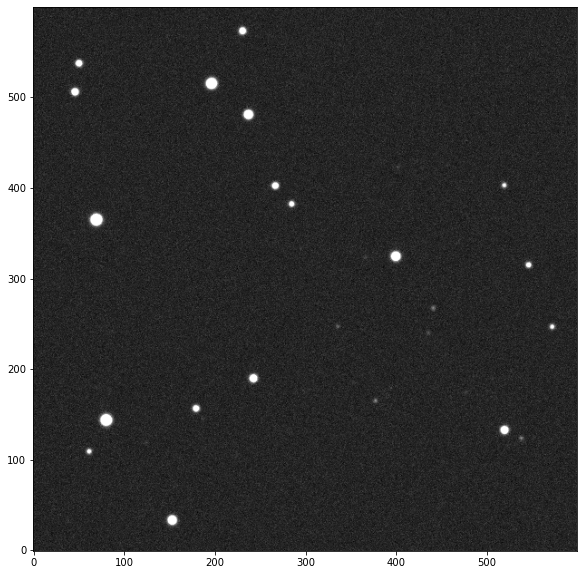
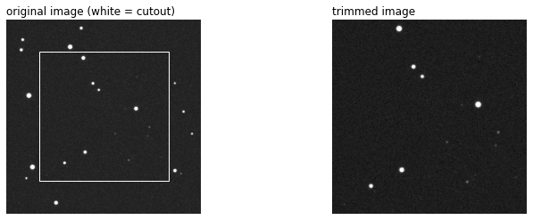
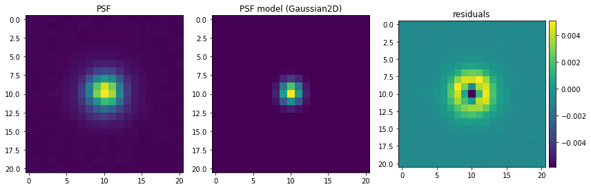

Simulated image#
[1]:
from prose.tutorials import example_image
WARNING (theano.link.c.cmodule): install mkl with `conda install mkl-service`: No module named 'mkl'
[2]:
image = example_image()
image.show()

Blocks#
[3]:
from prose import blocks
Trim#
[4]:
from prose import blocks
from prose.tutorials import example_image
# our example image
image = example_image()
# Creating and applying the Trim block
trim = blocks.Trim(trim=100)
trimmed_image = trim(image)
[5]:
import matplotlib.pyplot as plt
plt.figure(figsize=(12, 4))
ax1 = plt.subplot(121)
image.show(ax=ax1)
trim.draw_cutout(image)
plt.axis("off")
plt.title("original image (white = cutout)", loc="left")
ax2 = plt.subplot(122)
trimmed_image.show(ax=ax2)
plt.axis("off")
plt.title("trimmed image", loc="left")
[5]:
Text(0.0, 1.0, 'trimmed image')

FWHM#
[15]:
from prose import blocks, Sequence
from prose.tutorials import example_image
# our example image
image = example_image()
# Sequence to build image PSF
sequence = Sequence([
blocks.SegmentedPeaks(), # stars detection
blocks.Cutouts(),
blocks.MedianPSF(), # building PSF
])
sequence.run([image])
RUN default: 100%|████████████████████████████| 1/1 [00:00<00:00, 77.75images/s]
[18]:
import matplotlib.pyplot as plt
block = blocks.FWHM()
image = block(image)
Gaussian2D#
[8]:
from prose import blocks, Sequence
from prose.tutorials import example_image
# our example image
image = example_image()
# Sequence to build image PSF
sequence = Sequence([
blocks.SegmentedPeaks(), # stars detection
blocks.Cutouts(),
blocks.MedianPSF(), # building PSF
])
sequence.run([image])
RUN default: 100%|████████████████████████████| 1/1 [00:00<00:00, 78.26images/s]
[9]:
import matplotlib.pyplot as plt
block = blocks.Gaussian2D()
image = block(image)
[10]:
from prose import viz
print(f"model: {image.psf_model_block}")
print("fwhmx, fwhmy, theta: " + ", ".join([f"{p:.2f}" for p in block.fwhm(image.psf_models_params)]))
plt.figure(figsize=(12, 5))
plt.subplot(131)
plt.imshow(image.psf)
plt.title("PSF")
plt.subplot(132)
plt.imshow(image.psf_model)
plt.title(f"PSF model ({image.psf_model_block})")
plt.subplot(133)
residuals = image.psf - image.psf_model
ax = plt.imshow(residuals)
plt.title("residuals")
viz.add_colorbar(ax)
plt.tight_layout()
model: Gaussian2D
fwhmx, fwhmy, theta: 3.63, 3.35, 0.00

[10]:
from prose import viz
print(f"model: {image.psf_model_block}")
print("fwhmx, fwhmy, theta: " + ", ".join([f"{p:.2f}" for p in block.fwhm(image.psf_models_params)]))
plt.figure(figsize=(12, 5))
plt.subplot(131)
plt.imshow(image.psf)
plt.title("PSF")
plt.subplot(132)
plt.imshow(image.psf_model)
plt.title(f"PSF model ({image.psf_model_block})")
plt.subplot(133)
residuals = image.psf - image.psf_model
ax = plt.imshow(residuals)
plt.title("residuals")
viz.add_colorbar(ax)
plt.tight_layout()
model: Gaussian2D
fwhmx, fwhmy, theta: 3.63, 3.35, 0.00

Moffat2D#
[11]:
from prose import blocks, Sequence
from prose.tutorials import example_image
# our example image
image = example_image()
# Sequence to build image PSF
sequence = Sequence([
blocks.SegmentedPeaks(), # stars detection
blocks.Cutouts(),
blocks.MedianPSF(), # building PSF
])
sequence.run([image])
RUN default: 100%|████████████████████████████| 1/1 [00:00<00:00, 76.21images/s]
[12]:
import matplotlib.pyplot as plt
block = blocks.Moffat2D()
image = block(image)
[13]:
from prose import viz
print(f"model: {image.psf_model_block}")
print("fwhmx, fwhmy, theta: " + ", ".join([f"{p:.2f}" for p in block.fwhm(image.psf_models_params)]))
plt.figure(figsize=(12, 5))
plt.subplot(131)
plt.imshow(image.psf)
plt.title("PSF")
plt.subplot(132)
plt.imshow(image.psf_model)
plt.title(f"PSF model ({image.psf_model_block})")
plt.subplot(133)
residuals = image.psf - image.psf_model
ax = plt.imshow(residuals)
plt.title("residuals")
viz.add_colorbar(ax)
plt.tight_layout()
model: Moffat2D
fwhmx, fwhmy, theta: 2.67, 2.46, 0.00

Telescope#
[ ]:
from prose import Telescope
telescope_dict = dict(
# Name(s)
# -------
name = "Unknown",
names = [],
# Keywords
# --------
keyword_telescope = "TELESCOP",
keyword_object = "OBJECT",
keyword_image_type = "IMAGETYP",
keyword_light_images = "light",
keyword_dark_images = "dark",
keyword_flat_images = "flat",
keyword_bias_images = "bias",
keyword_observation_date = "DATE-OBS",
keyword_exposure_time = "EXPTIME",
keyword_filter = "FILTER",
keyword_airmass = "AIRMASS",
keyword_fwhm = "FWHM",
keyword_seeing = "SEEING",
keyword_ra = "RA",
keyword_dec = "DEC",
keyword_jd = "JD",
keyword_bjd = "BJD",
keyword_flip = "PIERSIDE",
keyword_observation_time = None,
# Units, formats and scales
# -------------------------
ra_unit = "deg",
dec_unit = "deg",
jd_scale = "utc",
bjd_scale = "utc",
mjd = 0,
# Specs
# -----
trimming = (0, 0), # in piwel along y/x
read_noise = 9, # in A
gain = 1, # in e-/ADU
altitude = 2000, # in meters
diameter = 100, # in meters
pixel_scale = None, # in arcseconds
latlong = [None, None],
saturation = 55000,
hdu = 0
)
telescope = Telescope(telescope_dict)
Image object#
Example#
The image object contains data and metadata from a FITS image. Let’s instantiate an example
[2]:
from prose.tutorials import image_sample
image = image_sample("05 38 44.851", "+04 32 47.68")
WARNING (theano.link.c.cmodule): install mkl with `conda install mkl-service`: No module named 'mkl'
INFO Querying https://archive.stsci.edu/cgi-bin/dss_form
INFO telescope Palomar Schmidt not found - using default
We can show the image with
[3]:
image.show()

with its header lying in
[5]:
image.header[0:10] # the 10 first lines
[5]:
SIMPLE = T /FITS: Compliance
BITPIX = 16 /FITS: I*2 Data
NAXIS = 2 /FITS: 2-D Image Data
NAXIS1 = 713 /FITS: X Dimension
NAXIS2 = 714 /FITS: Y Dimension
EXTEND = T /FITS: File can contain extensions
DATE = '2022-03-12 ' /FITS: Creation Date
ORIGIN = 'STScI/MAST' /GSSS: STScI Digitized Sky Survey
SURVEY = 'POSSI-O ' /GSSS: Sky Survey
REGION = 'XO538 ' /GSSS: Region Name
Once this object is instantiated, its parameters are mapped to the ones of the telescope, detected from the header information. This exposes conveniant attributres, for example:
[27]:
print(f"pixel scale : {image.pixel_scale:.2f}\n"
f"FOV: {image.fov}\n"
f"night: {image.night_date}\n")
pixel scale : 1.01 arcsec
FOV: [0.20031318 0.20003263] deg
night: 1955-11-22
some of them being directly translated into astropy Quantity or datetime object.
Such data can then be accesed and modified by blocks (see)
[31]:
import os
os.path.splitext("fef/eferfd.e")
[31]:
('fef/eferfd', '.e')
[34]:
Input In [34]
scp "hello"
^
SyntaxError: invalid syntax
[ ]: